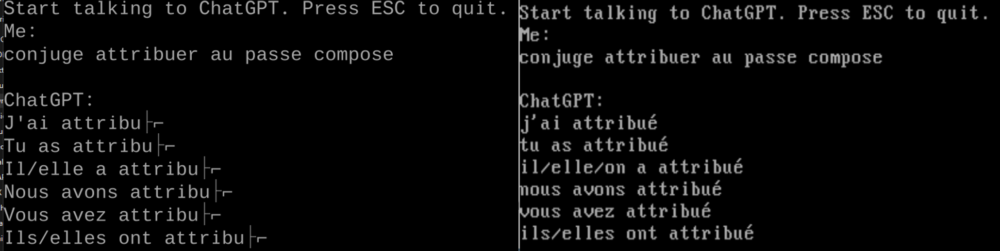

With the recent attention on ChatGPT and OpenAI’s release of their APIs, many developers have developed clients for modern platforms to talk to this super smart AI chatbot. However I’m pretty sure almost nobody has written one for a vintage platform like MS-DOS.
This client now supports Hugging Face API and text to speech (TTS) capability. More info on TTS is found at the later part of this post.
The App
Let’s jump right in and look at the app.
Screenshot of the app
Video of the client in action accessing ChatGPT. I first launch MTCP DHCP to get an IP address from my router, then launch my app to start chatting.
Video of the same client accessing Hugging Face.
If you are too excited to continue reading and want to dive into code and use the app, here is the repository on Github https://github.com/yeokm1/doschgpt.
A setup video “How to install the MS-DOS ChatGPT Client” has been posted by retrorygaming. You can use this as a reference setup tutorial.
Why DOS?
3.5 years ago, I wrote a Slack client to run on Windows 3.1. I thought to try something different this time and develop for an even older platform as a challenge.
DOS does not have native networking abilities and the systems are weaker in processing power thus it should present additional difficulties when coding for this platform.
Target Hardware
The oldest MS-DOS PC I have is my 1984 IBM 5155 Portable PC so it shall be the target platform. If my app can run on this IBM machine, it should run on pretty much any other DOS machine.
It has the following high-level specifications:
- Intel 8088 4.77Mhz CPU
- 640KB conventional memory (using upgrade kit)
- CGA ISA graphics
- NE2000-compatible ISA Ethernet adapter
- XT-IDE ISA drive controller
- MS-DOS 6.22
According to Wikipedia, this is an XT-class system that uses the same Intel 8088 CPU as the first IBM PC 5150 released in 1981. I have documented more details of this PC here.
Development setup
Compiler
Just like developing the Windows 3.1 Slack client, I had to locate a compiler that can target for old platforms like 16-bit DOS.
A quick Google search says that “best” compiler for such a job is the Open Watcom C/C++ compiler. It is a 32-bit program which means it can run on modern platforms like the 64-bit Windows 11!
Test environment and iteration process
The problem with 16-bit DOS programs is that modern 64-bit versions of Windows cannot execute them by default*. I still need a way to test the compiled binary during the development process. Transporting the binary over to my actual IBM DOS PC is possible but will greatly increase the hassle during development.
*Technically there are third-party solutions like winevdm but it will not work in this use case as will be explained later.
Therefore I setup a Virtualbox virtual machine running DOS 6.22:
Full configuration info of this VM can be found here.
I set it up to be on a Bridged network with the host PC so communication can be easily done between the two and the VM can access my internet connection.
On the host machine with the compiled binary, I start a simple webserver using Python to serve the binary python3 -m http.server 8000.
On the VM, I used a program from MTCP to download the binary for testing htget -o doschgpt.exe http://X.X.X.X:8000/doschgpt.exe.
Another test environment I used is 86Box.
Using provided ROMS, one can get a close emulation to the vintage target environment if the actual machine is not available.
Coding
Coding for the MS-DOS platform presents some additional challenges over modern Windows/Mac/Linux. The greatest issue is networking APIs as DOS does not natively come with those.
Yet DOS programs with TCP/IP network abilities have been written before so this was definitely possible.
App architecture
After doing some research, I found out that there is a networking standard called the Packet Driver API that was invented in 1983.
To use the low-level Packet Driver API, a network card manufacturer will release a driver that implements this API. The app developer then uses this API to talk to the network card.
Initially I thought it would be a huge challenge to pick up this low-level API but thankfully there is an existing open-source network library that can help with this task. This library is MTCP written by Michael B. Brutman and operates till as low as the link-layer.
This is a high-level overview of the communication path.
The MTCP library has to be integrated into the application. It will then communicate with the manufacturer-provided Packet Driver which is running as a Terminate-and-stay-resident(TSR) program. TSRs stay dormant in the background until called by an application. The Packet Driver then communicates directly with the network card.
There is no packet driver I can find that can be installed on a modern 64-bit Windows OS. Hence even if the 16-bit DOS binary can be executed using tools like winevdm, it won’t connect to the network.
On the other hand, Packet Drivers are relatively common for older network cards like the NE2000-compatible card I use in my IBM5155.
Networking
Thanks to the well-documented MTCP library. Coding through this section was relatively easy however there are some considerations that have to be kept in mind.
There is no concept of multi-threading in DOS so nothing is running in the background to service the network stack that we take for granted as a part of modern operating systems. The network stack is mostly controlled by the application hence this servicing has to be done internally as well.
This set of functions have to be called regularly in order to drive the lower network layers.
PACKET_PROCESS_SINGLE;
Arp::driveArp();
Tcp::drivePackets();
MTCP provides raw socket APIs with basic send() and recv() functions that are sufficient for one to use.
ChatGPT API
OpenAI has released many APIs but I only use one of them which is the Chat Completion. Their Chat Completion API is neatly documented here.
They even provide a nice curl example for one to reference:
curl https://api.openai.com/v1/chat/completions -H "Content-Type: application/json" -H "Authorization: Bearer sk-XXX" -d '{ "model": "gpt-3.5-turbo", "messages": [{"role": "user", "content": "What is MS-DOS?"}], "temperature": 0.7 }'
With this API I will need to construct the entire POST request. Unlike in modern development platforms, there are no helper functions I can use so I have to construct the entire POST request by hand in C such as follows:
#define API_CHAT_COMPLETION "POST /v1/chat/completions HTTP/1.1\r\nContent-Type: application/json\r\nAuthorization: Bearer %s\r\nHost: api.openai.com\r\nContent-Length: %d\r\nConnection: close\r\n\r\n%s"
#define API_BODY "{ \"model\": \"%s\", \"messages\": [{\"role\": \"user\", \"content\": \"%s\"}], \"temperature\": %.1f }"
#define API_BODY_SUBSEQUENT "{ \"model\": \"%s\", \"messages\": [{\"role\": \"user\", \"content\": \"%s\"}, {\"role\": \"assistant\", \"content\": \"%s\"}, {\"role\": \"user\", \"content\": \"%s\"}], \"temperature\": %.1f }"
There are 2 types content that will be sent to the server. If this is the start of the conversation, API_BODY is filled up with the current user request and sent. For subsequent messages, the current user request is sent plus the previous request and ChatGPT reply.
Sending the previous request and reply allows the model to have some context of the immediate conversation that took place before such as this:
Notice the second question does not mention Singapore? The model is able to infer the latest question is about Singapore because I sent the previous request and reply.
Technically, one can send more previous requests/reply for even better context but this would mean even more buffers and programming logic has to be coded for. In my testing, just sending the previous request/reply should give sufficient context for the next question.
JSON Parsing
ChatGPT API will return the following JSON output.
{"id":"chatcmpl-XXXXX","object":"chat.completion","created":1679326062,"model":"gpt-3.5-turbo-0301","usage":{"prompt_tokens":13,"completion_tokens":114,"total_tokens":127},"choices":[{"message":{"role":"assistant","content":"\n\nMS-DOS (Microsoft Disk Operating System) is a command-line operating system....."},"finish_reason":"stop","index":0}]}
We want the value of the content key. I tried a few JSON C89 libraries but OpenWatcom had difficulties compiling them.
After fighting with the compiler for some time, I realised I actually didn’t need a JSON library as I only need to parse the one JSON format for a fixed key-value pair.
So I simply use the C function strstr to look for the key. Then search for the start and end index of the value. I do the same for the prompt_tokens and completion_tokens key-value pairs as well.
HTTPS
Just like my Windows 3.1 Slack app, I face a similar issue where the ChatGPT APIs are encrypted over HTTPS.
If there aren’t any modern TLS libraries compatible with Windows 3.1, it is even more unlikely one will be available for the DOS platform. (Correction: As of June 2023, an anonymous developer called dialup.net has ported a TLS 1.3 library to Windows 3.1. More details here)
Even if such modern TLS encryption algorithms are ported (with significant effort no doubt) to run on the Intel 8088, it is likely to be too heavy to execute in a reasonable amount of time for such an old CPU.
A TLS library meant for older UNIX systems Crypto Ancienne had this documented:
Some systems may be too slow for present-day server expectations and thus will appear not to function even if the library otherwise works correctly. In our testing this starts to become a problem for CPUs slower than 40MHz or so, regardless of architecture.
… Macintosh IIci with a 25MHz 68030 and no L2 card took 22 seconds … for a single short TLS 1.2 transaction to a local test server; a number of Internet hosts we tested it with simply cut the connection instead of waiting. https://github.com/classilla/cryanc/blob/main/README.md
Therefore modern hardware has to be used to conduct the TLS transaction. I decided to cheat in the same way by using my own http-to-https-proxy in Golang.
Running on a modern PC and acting as a transparent middleman, it inspects the host field of the HTTP requests and forwards the raw socket bytes as HTTPS to OpenAI’s servers as-is. The payload is then relayed back byte-for-byte back to the client with no modification.
As I would say again:
Purists may not like this solution but this is the best I can do with my abilities in a reasonable amount of time.
Reading/writing input to the console
Writing text output to the screen is relatively simple by using the standard C printf() function.
For reading input, there is where things get interesting. The standard way for modern C programs is to use console functions like fgets() or scanf() or a variant of one of those functions combined with multi-threading.
The issue is that those console functions will pause the program while waiting for user input. Since the network stack is managed by the single-threaded DOS application instead of the operating system on modern systems, it means the network stack will be halted as well while waiting for user input.
The user input therefore has to checked without pausing the execution of the program.
I consulted the MTCP page and online samples on how this can be done. This is the sample code for this purpose:
int currentMessagePos = 0;
char * messageToSend = (char *) calloc (SIZE_MESSAGE_TO_SEND, sizeof(char));
while(true){
if ( _bios_keybrd(_KEYBRD_READY) ) {
char character = _bios_keybrd(_KEYBRD_READ);
...
messageToSend[currentMessagePos] = character;
currentMessagePos++;
printf("%c", character);
fflush(stdout);
}
}
_bios_keybrd is a passthrough to the INT 16h BIOS keyboard interrupt.
If a keypress is detected, the key is stored to a local buffer and printed to the console. I can now check and receive keypresses without pausing the program.
However directly receiving the keypresses to store to my own local buffer and directly printing the key pressed introduces another issue. How to handle backspaces where we need to remove the previous character?
This is actually a generic C problem and I found the answer here by using \b \b.
//Backspace character
if(character == 8){
...
// Remove previous character
printf("%s", "\b \b");
currentMessagePos--;
messageInBuffer[currentMessagePos] = '\0';
fflush(stdout);
}
The backspace character alone only moves the cursor back but does not remove the character on screen. So by using \b \b, we move the cursor back once, write a space, then move the cursor back again. After that, remove the character from the local buffer.
This issue is typically not encountered on programs that use the standard scanf() or fgets() functions.
UTF-8 and Code Pages
The conventional range of ASCII contains 128 code points of which 95 are printable characters. The initial version of this app will print out whatever character that was sent from the API’s JSON output. JSON uses the modern standard UTF-8 to represent characters.
For the first 128 code points, all is good. However problems arise when we are dealing with variable-sized UTF-8 characters outside the first 128 points that uses more than one byte. This issue was brought up to me that my app does not properly display accented characters which are outside of these 128 points.
Left was the original version. Right is my fixed version. The é acute U+00E9 is represented by 2 bytes 0xC3 and 0xA9 in UTF-8.
In my original version, the raw bytes are printed directly as ASCII. This means UTF-8 bytes are not handled leading to display issues as the original IBM PC predates Unicode and does not natively support displaying UTF-8 characters.
However IBM/DOS systems support something called Code Pages(CP) which utilises Extended ASCII to allow code points from 128 to 255 to be used to display additional characters.
One of the default character sets available and loaded by default in IBM DOS systems is called the Code Page 437 character set.
Source: https://en.wikipedia.org/wiki/Code_page_437
This character set is small and obviously does not support all UTF-8 characters but it does support more characters over the conventional ASCII.
As I could not locate UTF-8 to CP437 translation code online that fit what I wanted, I wrote translator functions here. It will check the 1-3 byte values of a potential UTF-8 character that has a CP437 equivalent, then make the conversion to the appropriate CP437 value. Otherwise, an empty square ■ is displayed.
An example test of the accented characters on the actual IBM PC.
Soon after, a user from Greece Nikos Pinnikas suggested I should add Greek support as well. Greek is supported through the CP737.
Source: https://en.wikipedia.org/wiki/Code_page_737
This code page has to be loaded before starting the app. After that, the app has to be set to look for Greek-specific UTF-8 characters using the -cp737 command line argument. This is because all code pages map to the same code point space and the app will assume CP437 by default.
This screenshot from Nikos shows the successful result.
The translator functions for Greek CP737 can be found here.
Text to Speech
This feature was added later based on the suggestion of Nikos that enables the app to speak in the voice of Dr. Sbaitso. Dr Sbaitso was an AI speech synthesis program released by Creative in 1991.
A 6.5 min demo video using my vintage i486 desktop and a Sound Blaster 16 CT2950.
Doing this requires these utilities from Dr Sbaitso install media downloadable from Winworld:
- SBTalker.exe: Smoothtalker by First Byte text-to-speech engine that loads as a TSR
- Blaster.drv: Used by Smoothtalker to talk to a Sound Blaster compatible card
- Read.exe: Reads its command line arguments to the Smoothtalker TSR
- Remove.exe: To unload the memory-hungry TSR after use
With this “API” I do not have to manually find a DOS-compatible Text to Speech (TTS) C algorithm and look up how to address the Sound Blaster hardware directly.
The startup banners of those utilities which I made sure are displayed on app start.
The SBTalker TSR consumes a lot of memory when loaded so my client app will unload this TSR after it completes.
Read.exe is the primary tool used by my client app to send the text strings to be read. However in DOS there is a limit of up to 127 bytes for command line arguments. This means that long replies from ChatGPT will have to be broken up and passed to Read.exe through repeated calls. To do this, I split strings by punctuation and have Read.exe read phrase by phrase hence why there are some noticeably longer pauses in some parts.
On every call to Read.exe, the Creative banner will display thus affecting the user experience. To mitigate this, I redirect the stdout before the call to Read.exe and restore the stdout after the call completes. Here is some sample code to show how it was done:
// Send stdout to nul
freopen("nul", "r", stdout);
// Tell read program to read the words "hello world"
system("read hello world");
// Flush away existing stdout content
fflush(stdout);
//Restore the stdout
freopen("con", "a", stdout);
You may wonder I did not use my IBM5155 for this demo? It’s because I found that while the 4.77Mhz Intel 8088 can run the speech synthesis and playback utilities, it was too slow and choppy to be bearable. Emulation testing under 86Box shows that the minimum CPU speed for reasonable performance is 8Mhz. My 486 desktop is the next step up the vintage system ladder I have so I have to use this in my demo.
TTS improvement (Sept 2023)
A developer systoolz found an improvement where instead of repeatedly calling read.exe, a call can be made directly to the TTS engine. A library called dosbtalk was created to do this. This library also increases the buffer size to at least 250 bytes per API “call” thus reducing the amount of overall calls and pauses required.
I integrated the library and things are very much improved!
Notice the increased speed with no more awkward pauses. Many thanks to systoolz.
Conclusion
This project would not have been possible without the help of Brutman’s excellent well-documented MTCP library. Without his library and sample code, figuring out how to talk to the Packet Driver and implementing the entire TCP/IP stack down to the link-layer will be an extremely tall order.
Writing this chat client was a fun experience. Having the compiler being able to be run on modern Windows OS certainly make things easier. In fact it was easier than for Windows 3.1 Slack app I did before. I initially thought that using x86 Assembly was mandatory but thankfully I did not have to do so.
Considering this is my first time coding for the DOS platform and on this old IBM PC at that, I was actually impressed by the performance of old machines like this. And before you ask, I did not use ChatGPT for help to code this app in any way. But anyway I decided to ask it.
“Keep in mind that creating a DOS ChatGPT client may be challenging, as DOS is an outdated operating system and may not have the necessary tools and resources to develop modern applications.” ChatGPT (Mar 2023)
Challenge already accepted and won. :P. And what is the AI smoking with using the official Python API library on a DOS platform…*
After experiencing this, I will definitely be writing more retro-software in future. Till then, I hope you learned something and enjoyed reading this as much as me developing this app.
*As someone pointed out, Python for MS-DOS is available. It’s true and it came up in my research but it’s an older version of Python 2.4.2 and requires a 32-bit CPU (such as 80386 or higher) since it is compiled using DJGPP. This would mean it will not work for my target platform IBM5155 which uses a 16-bit Intel 8088. The Python library from OpenAI clearly mentions its requirements as Python 3.7.1+ so it is highly unlikely to work on such an old version of Python too.
This is a 0.5h video of a talk I gave at JuniorDevSG meetup on Apr 2023


{kind=link}
{kind=link}
{kind=link}
{kind=link}
{kind=link}
{kind=link}
{kind=link}
{kind=link}
{kind=link}
{kind=link}
{kind=link}
{kind=link}
{kind=link}
{kind=link}
{kind=link}
{kind=link}